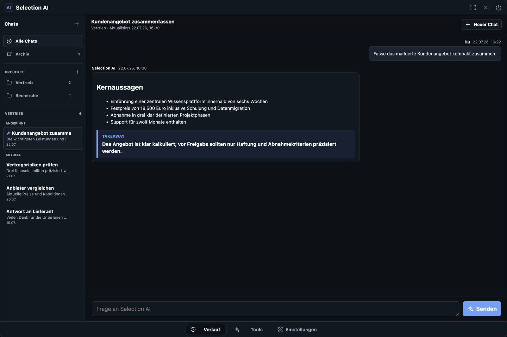
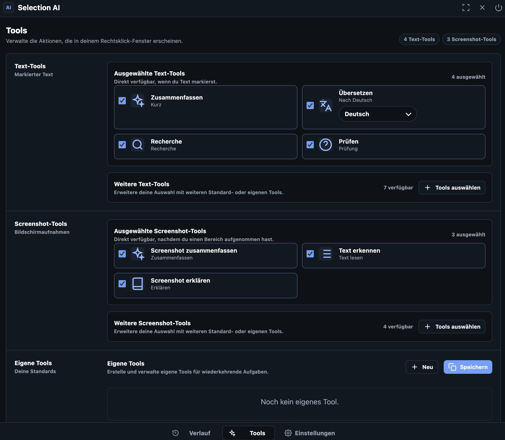
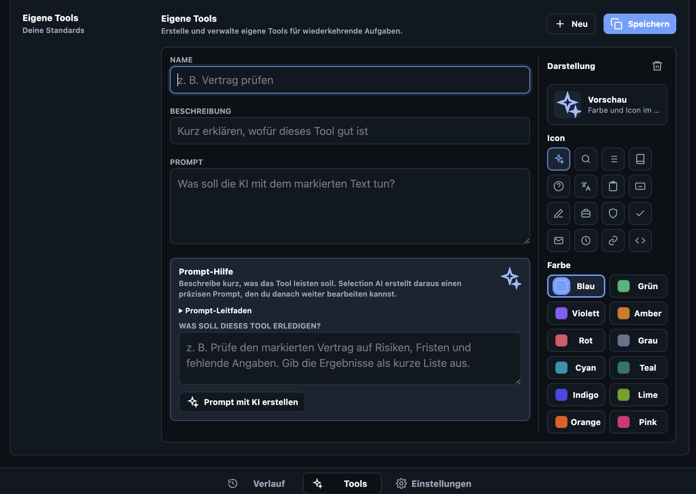

Text und Screenshots
Auswahl oder Bild direkt verarbeiten.
Beta für macOS und Windows
KI direkt dort, wo du arbeitest.
Markieren. Rechtsklick. Ergebnis. KI ohne Umweg über ein separates Chatfenster.
Im Arbeitsfluss
Die KI erscheint neben deiner Auswahl. Das Systemmenü bleibt verfügbar.
Funktionen
Auswahl oder Bild direkt verarbeiten.
Antworten mit überprüfbaren Quellen.
Wiederkehrende Arbeit mit einem Klick erledigen.
Arbeitsbereich
Chats, Tools und Einstellungen bleiben mit deinem Konto verbunden.

Wichtige Ergebnisse bleiben organisiert.

Für jede Eingabeart die passenden Aktionen.

Ziel beschreiben. Prompt, Name und Beschreibung entstehen mit KI.
Zentral und kontrollierbar
Verlauf, Tools und Einstellungen bleiben synchron.
50 KI-Anfragen im Monat. Für macOS und Windows.